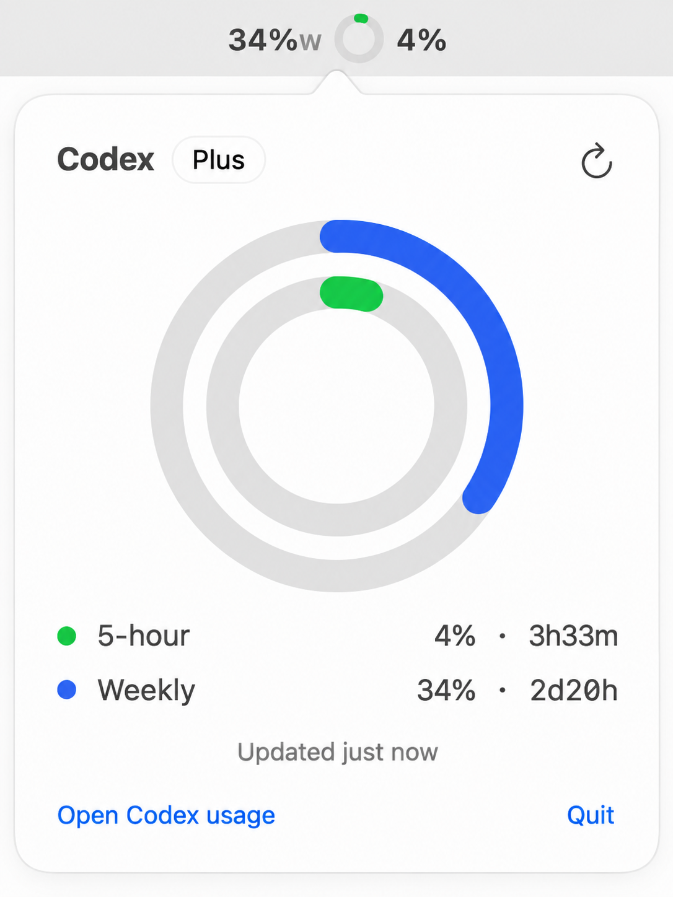

Two rings. Blue is the week. Green is the next five hours.
Look up. Know if you can keep coding.
brew install --cask yourarnav/tap/codexreserve

No dashboard. No accounts. No providers to configure.
It does not track anything except the two numbers that decide whether you keep coding.
Refreshes once a minute. A soft chime at 50% and 20%.
Quit Codex and it quits with it, leaving nothing behind.
Pure Swift. SwiftUI and AppKit. Zero dependencies.
17 MB of RAM. Roughly zero CPU. No Electron.